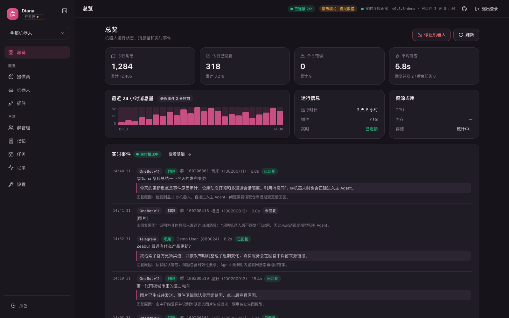

Run your own AI right inside the chat apps you already use. It knows when to chime in and when to stay quiet in groups, remembers what matters, searches the web, parses links and files, and runs Skills, MCP, and local coding agents — all in a single binary with a built-in web console, keeping every piece of data on your machine.
curl -fsSL https://raw.githubusercontent.com/SuInk/Diana/main/scripts/install.sh | sh
irm https://raw.githubusercontent.com/SuInk/Diana/main/scripts/install.ps1 | iex
curl -fsSL https://raw.githubusercontent.com/SuInk/Diana/main/scripts/docker/chromium-seccomp.json -o chromium-seccomp.json && docker run -d --name diana --security-opt seccomp="$PWD/chromium-seccomp.json" -p 18080:18080 -v diana-data:/app/data ghcr.io/suink/diana:latest
Once it finishes, open http://127.0.0.1:18080 to run the first-time setup.

No more choosing between a noisy group toy and a black-box framework that takes hours to configure.
Knows when to chime in and when to stay quiet without being @-mentioned — no dead silence, no spam. Reply hours, personas, allow/deny lists, and tool permissions are tuned per group.
Uses file, shell, and browser tools, loads Skills and MCP servers on demand, and dispatches tasks to local Claude Code / Codex. Toggle safe mode to isolate host tools against prompt injection.
No Python or Node runtime to wrangle — one command starts the service and built-in WebUI. Config, memory, and logs live in local SQLite with zero cloud dependency.
Run QQ, Telegram, WeChat, iMessage, and the built-in console in parallel with strict per-bot context isolation. Connects outbound so home and LAN setups work out of the box.
Recent context, compacted summaries, structured facts, and deep history recall work in layers — remembering preferences and group rules while keeping token spend under control.
Researches time-sensitive questions via a sandboxed browser by default (or global Exa / Tavily providers), and parses Bilibili, YouTube, X, Xiaohongshu links plus PDF and Office files.
Vision models and offline OCR let even text-only models read screenshots and stickers; tables, flowcharts, and sequence diagrams are rendered into clean images when text falls short.
Bind chat, vision, intent detection, and image generation to different providers and models — verified with a real request before saving, and switchable right from chat.
See why every message was answered or skipped, which tools ran, and how many tokens were spent in the event center — no more guessing why a bot went silent.
The installer detects your OS and architecture, downloads the latest stable build and verifies its SHA-256 against latest.json. Upgrades back up your data first and roll back automatically if the health check fails.
# the same command installs and upgrades
curl -fsSL https://raw.githubusercontent.com/SuInk/Diana/main/scripts/install.sh | sh
# Run inside Termux; no root required
pkg install -y curl tar coreutils && curl -fsSL https://raw.githubusercontent.com/SuInk/Diana/main/scripts/install.sh | sh
# the same command installs and upgrades
irm https://raw.githubusercontent.com/SuInk/Diana/main/scripts/install.ps1 | iex
# Run in your data directory; Docker with Compose must be installed and running
curl -fsSL https://raw.githubusercontent.com/SuInk/Diana/main/scripts/docker.sh | sh
Read https://raw.githubusercontent.com/SuInk/Diana/main/skills/diana-install/SKILL.md and follow it to install the latest stable release of Diana on this machine.
The initial admin username and password are printed once in the terminal — save them right away; reset anytime with diana passwd.
Visit 127.0.0.1:18080 and sign in with the admin account shown in the terminal.
Configure your models and connect any platform in the web console, or start immediately with the built-in bot.
Upgrade from the console, or simply run the install command again; a failed upgrade restores itself.
Works with SnowLuma (recommended) and other OneBot implementations, in groups and direct messages, with per-group policy over how it replies.
Official Bot API long polling. Outbound only, so no public address is needed.
QQ Open Platform WebSocket gateway. Outbound connection, no public address needed.
Tencent iLink Bot with QR-code login and outbound long polling; private chats only.
Sent and received through BlueBubbles Server on a Mac, via webhook callbacks with optional polling fallback.
No platform credentials required — chat or start a voice call right inside the console's Chat page to try everything immediately.
The first four external platforms connect outbound from your machine, so home or LAN setups work as-is; iMessage only needs your Mac to reach Diana — no public address required.
One-line install, Docker, binaries and every deployment shape.
Channels, models, group policy and the full config.yaml reference.
Upgrades, backups, event auditing and day-to-day maintenance.
Architecture, the plugin system and how the agent tool loop works.
Flowcharts for reply triggers, agent runs, browsers and pre-send review.